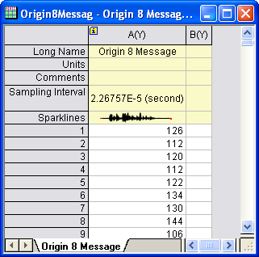
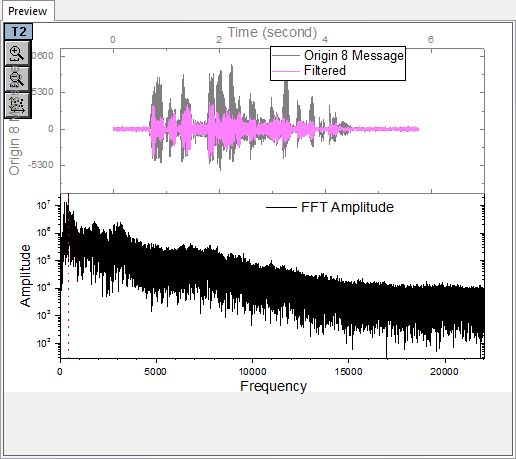
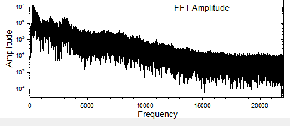
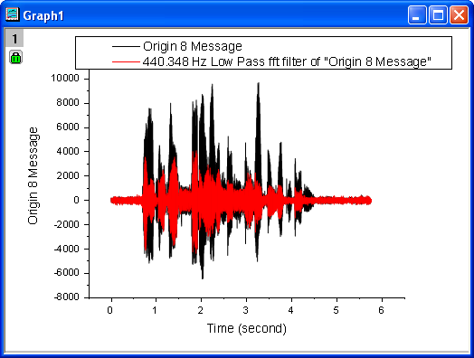
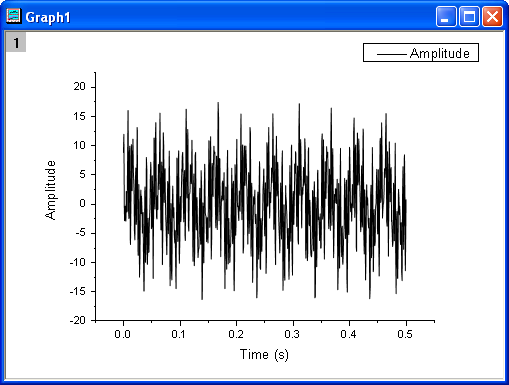
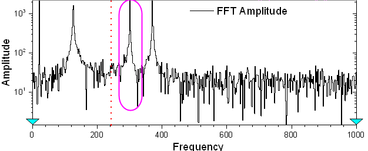
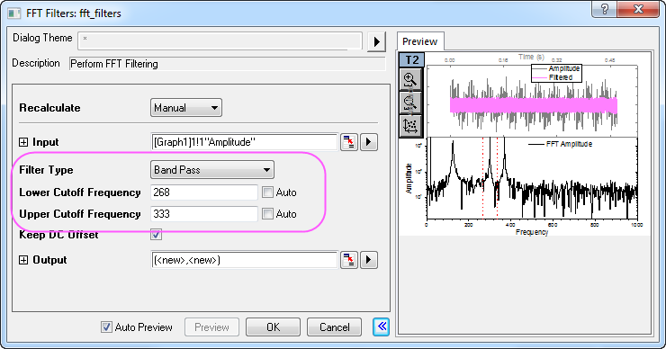
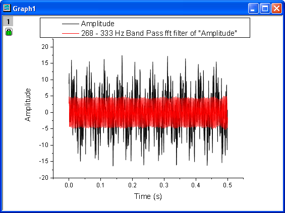

FFT-Filter
FFT-Filter
Zusammenfassung
Origin enthält einen FFT-Filter, der Filterung mit Hilfe der Fourier-Transformation durchführt, mit der die Frequenzkomponenten im Eingabedatensatz analysiert werden.
Es gibt sechs Filtertypen in der Funktion des FFT-Filters: Tiefpass, Hochpass, Bandpass, Bandblock und Schwellenwert und Tiefpass Parabolisch. Tiefpassfilter blocken alle Frequenzkomponenten über der Grenzfrequenz, so dass nur die niedrigen Frequenzkomponenten durchkommen. Hochpassfilter sind genau das Gegenteil: Sie blocken die Frequenzkomponenten, die unter der Grenzfrequenz liegen.
Dieses Tutorial zeigt Ihnen, wie eine Filterung mit Tiefpass und Bandpass mit Hilfe des FFT-Filters von Origin durchgeführt wird.
Was Sie lernen werden
Dieses Tutorial zeigt Ihnen, wie Sie:
- eine Tiefpassfilterung durchführen.
- eine Bandpassfilterung durchführen.
Tiefpassfilter
- Öffnen Sie eine leere Arbeitsmappe. Wählen Sie Hilfe: Ordner öffnen: Sample-Ordner ... im Menü, um den Ordner "Samples" zu öffnen. Öffnen Sie in diesem Ordner den Unterordner Signal Processing. Dort befindet sich die Datei Origin 8 Message.wav. Ziehen Sie diese Datei per Drag&Drop in das leere Arbeitsblatt, um sie zu importieren.
- 
- Markieren Sie Spalte A(Y) und klicken Sie auf die Schaltfläche Linie
 auf der Symbolleiste 2D-Grafiken, um ein Liniendiagramm zu erstellen.
auf der Symbolleiste 2D-Grafiken, um ein Liniendiagramm zu erstellen.
- Dieses Signal ist eine Schallwelle. Es ist bereits bekannt, dass die Hochfrequenzkomponenten als Rauschen betrachtet werden können und blockiert werden sollten. Deswegen wird die Methode Tiefpass im Hilfsmittel FFT-Filter verwendet, um grob die tiefen Frequenzkomponenten für die weitere Analyse zu vermitteln.
- Stellen Sie sicher, dass das Liniendiagramm aktiv ist, und wählen Sie dann Analyse: Signalverarbeitung: FFT-Filter, um den Dialog zu öffnen.
- Stellen Sie sicher, dass der Filtertyp auf Tiefpass gesetzt ist.
- Aktivieren Sie das Kontrollkästchen Automatische Vorschau, um das Bedienfeld Vorschau zu aktivieren.
- 
- Die oberen beiden Bilder zeigen das Signal in der Zeitdomäne, während das untere Bild das Signal in der Frequenzdomäne nach der Fast-Fourier-Transformation zeigt. Die X-Position der roten vertikalen Linie entspricht dem Wert für die Grenzfrequenz. Indem Sie die vertikale Linie horizontal verschieben, können Sie die Vorschau des Vergleichs zwischen dem ursprünglichen Signal und dem gefilterten Signal in Echtzeit im oberen Bereich des Bedienfelds sehen.
- Verschieben Sie die vertikale Linie in die X-Position der Peakamplitude (wie im Bild unten zu sehen). Beachten Sie, dass während dieses Schritts von Menschen verursachte Fehler entstehen können. Dies ist allerdings akzeptabel, da hier das Signal nur grob gefiltert werden soll.
- 
- Klicken Sie auf OK, um den FFT-Filter auf das ursprüngliche Signal anzuwenden.
- Das Signal nach der Filterung wird zu der Datenzeichnung des ursprünglichen Signals hinzugefügt. Wählen Sie Grafik: Entwurfsmodus und schalten Sie den Entwurfsmodus in diesem Diagramm aus. Das Diagramm sollte am Ende folgendermaßen aussehen:
- 
- In dem Ergebnisdiagramm können Sie sehen, dass die Hochfrequenzkomponenten von dem Tiefpass-FFT-Filter blockiert werden.
Bandpassfilter
- Öffnen Sie eine neue Arbeitsmappe. Wählen Sie Hilfe: Ordner öffnen: Sample-Ordner ... im Menü, um den Ordner "Samples" zu öffnen. Öffnen Sie in diesem Ordner den Unterordner Signal Processing. Dort befindet sich die Datei fftfilter3.dat. Ziehen Sie diese Datei per Drag&Drop in das leere Arbeitsblatt, um sie zu importieren.
- Markieren Sie Spalte B und klicken Sie auf die Schaltfläche Linie auf der Symbolleiste für 2D-Grafiken, um ein Liniendiagramm zu erstellen.
- 
- Wählen Sie bei aktivem Diagramm im Menü Analyse: Signalverarbeitung: FFT-Filter. Der Dialog fft_filters wird geöffnet.
- Aktivieren Sie das Kontrollkästchen Automatische Vorschau, um das Bedienfeld Vorschau zu aktivieren.
- Aus der Frequenzdomäne (Bild unten) können Sie ersehen, dass dieses Signal Komponenten auf mehreren unterschiedlichen Frequenzen hat. Jetzt ermitteln Sie die Komponente um ca. 300Hz. Verwenden Sie die Methode Bandpass.
- 
- Legen Sie den Filtertyp auf Bandpass fest.
- Sobald Bandpass gewählt wird, sind zwei vertikale rote Linien in dem Vorschaufeld zu sehen, die sich auf die untere und die obere Grenzfrequenz beziehen. Entsprechend können Sie diese beiden Linien verschieben und die Echtzeitvorschau der Filterungsergebnisse in dem oberen Bereich dieses Bedienfelds erhalten.
- Geben Sie die Werte der unteren und oberen Grenzfrequenz gemäß dem untenstehenden Bild ein:
- 
- Solange sich nur der gewünschte Amplitudenpeak innerhalb des Grenzfrequenzbereichs befindet, sollte der Fehler beim Filtern als akzeptabel betrachtet werden, auch wenn die Werte der oberen und unteren Grenzfrequenz sich leicht für verschiedene Fälle unterscheiden können.
- Klicken Sie zum Ausführen der Filterung auf OK.
- Sie erhalten die Komponenten bei einer Frequenz von um die 300 Hz nach der Filterung.
- 